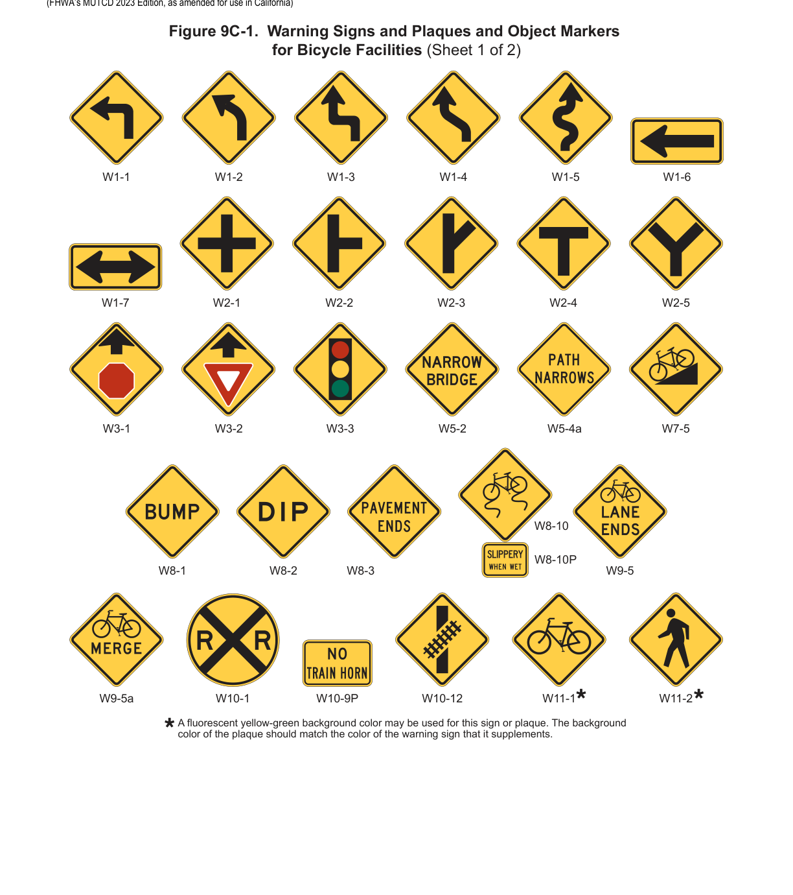
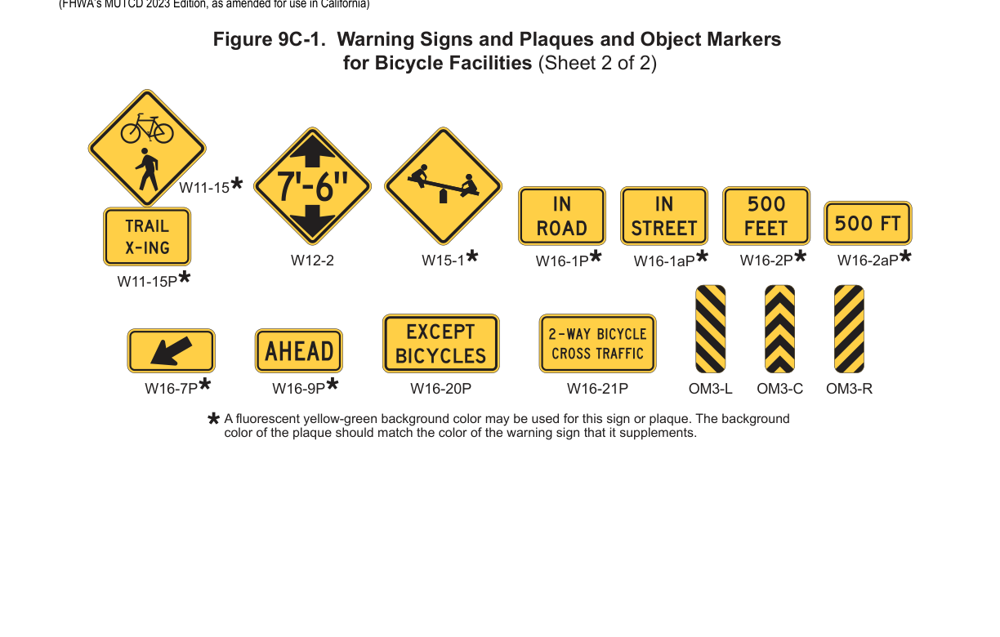

Part 9 · Traffic Control for Bicycle Facilities · Chapter 9C
Warning Signs and Object Markers
The W-series warning signs and plaques (turn/curve, intersection, surface condition, bicycle crossing, lane-ends/merge, and other bicycle warning devices) and Type 3 object markers used on bikeways and shared-use paths.
9C.01Turn or Curve Warning Signs (W1 Series)
Guidance — Recommended Practice
- 01To warn bicyclists of unexpected changes in shared-use path direction, appropriate Turn, Curve, or Large Arrow (W1-1 through W1-7) signs (see Figure 9C-1) should be used.
- 02The W1-1 through W1-5 signs should be installed at least 50 feet in advance of the beginning of the change of alignment.
9C.02Intersection Warning Signs (W2 Series)
Option — Permissive
- 01Intersection Warning (W2-1 through W2-5) signs (see Figure 9C-1) may be used on a roadway, street, or shared-use path in advance of an intersection to indicate the presence of an intersection and the possibility of turning or entering traffic.
Guidance — Recommended Practice
- 02When engineering judgment determines that the visibility of the intersection is limited on the shared-use path approach, Intersection Warning signs should be used.
- 03Intersection Warning signs should not be used where the shared-use path approach to the intersection is controlled by a STOP sign, a YIELD sign, or a traffic control signal.
9C.03Bicycle Surface Condition Warning Sign (W8-10)
Option — Permissive
- 01The Bicycle Surface Condition Warning (W8-10) sign (see Figure 9C-1) may be installed where roadway, bikeway, or shared-use path conditions could cause a bicyclist to lose control of the bicycle.
- 02Signs warning of other conditions that might be of concern to bicyclists, including BUMP (W8-1), DIP (W8-2), PAVEMENT ENDS (W8-3), and any other word message that describes conditions that are of concern to bicyclists, may also be used (see Figure 9C-1).
- 03A supplemental plaque may be used to clarify the specific type of surface condition.
9C.04Bicycle Warning and Trail Crossing Signs (W11-1 and W11-15)
Support — Background/Explanatory
- 01The Bicycle Warning (W11-1) sign (see Figure 9C-1) alerts the road user to unexpected entries into the roadway by bicyclists, and other crossing activities that might cause conflicts. These conflicts might be relatively confined, or might occur randomly over a segment of roadway.
- 02Section 9C.06 contains information for Bicycle Cross Traffic Warning plaques that can be used below STOP signs on crossroads or driveways that intersect with bicycle facilities.
Option — Permissive
- 03The Trail Crossing (W11-15) sign (see Figure 9C-1) may be used where both bicyclists and pedestrians might be crossing the roadway, such as at an intersection with a shared-use path. A TRAIL X-ING (W11-15P) supplemental plaque may be mounted below the W11-15 sign.
Support — Background/Explanatory
- 03aRefer to FHWA's List of Known Errors for an error in labeling Paragraph 4. Refer to Section 1A.04 for more details.
Option — Permissive
- 04If used in advance of a trail crossing, a W11-15 or W11-15a sign should be supplemented with an AHEAD (W16-9P) or XX FEET (W16-2P or W16-2aP) plaque to inform road users that they are approaching a point where crossing activity might occur.
Support — Background/Explanatory
- 05aRefer to FHWA's List of Known Errors for errors in Paragraph 4 and between Paragraphs 4 and 5. Refer to Section 1A.04 for more details.
Guidance — Recommended Practice
- 05If used in advance of a specific crossing point, the Bicycle Warning or Trail Crossing sign should be placed at a distance in advance of the crossing location that complies with Table 2C-3.
Standard — Mandatory Requirement
- 06Bicycle Warning and Trail Crossing signs, when used at the location of the crossing, shall be supplemented with a diagonal downward-pointing arrow (W16-7P) plaque to show the location of the crossing.
Option — Permissive
- 07A fluorescent yellow-green background color with a black legend and border may be used for Bicycle Warning and Trail Crossing signs and supplemental plaques.
Guidance — Recommended Practice
- 08When the fluorescent yellow-green background color is used, a systematic approach featuring one background color within a zone or area should be used. The mixing of standard yellow and fluorescent yellow-green backgrounds within a zone or area should be avoided.
9C.05EXCEPT BICYCLES Warning Plaque (W16-20P)
Option — Permissive
- 01Where it might be advantageous to notify bicyclists that the conditions or hazards depicted by a warning sign are not applicable to bicycles, the EXCEPT BICYCLES (W16-20P) warning plaque (see Figure 9C-1) may be used.
Support — Background/Explanatory
- 02Examples of warning signs where an EXCEPT BICYCLES warning plaque can be mounted include DEAD END (W14-1) and NO OUTLET (W14-2) signs (see Section 2C.24).
- 03Sections 2C.57 and 2C.58 contain information on the design of supplemental warning plaques.
9C.06Two-Way Bicycle Cross Traffic Warning Plaque (W16-21P)
Standard — Mandatory Requirement
- 01When used, the Two-Way Bicycle Cross Traffic (W16-21P) warning plaque (see Figure 9C-1) shall be installed below a STOP or YIELD sign.
Option — Permissive
- 02The Two-Way Bicycle Cross Traffic warning plaque may be used below STOP or YIELD signs on crossroads and driveways to alert road users of an unexpected bicycle movement.
Support — Background/Explanatory
- 03The Two-Way Bicycle Cross Traffic warning plaque can help minimize overuse or misapplication of other warning signs such as the Bicycle Warning (W11-1) sign.
Guidance — Recommended Practice
- 04The Two-Way Bicycle Cross Traffic warning plaque should be used in combination with a STOP or YIELD sign when a counter-flow or two-way bicycle facility has an approach that is counter to the customary scanning behavior of a motorist at that location.
9C.07Bicycle Lane Ends Warning Sign (W9-5) and Bicycles Merging Sign (W9-5a)
Support — Background/Explanatory
- 01Where a warning sign is appropriate, the Bicycle Lane Ends (W9-5) warning sign (see Figure 9C-1) is intended to alert road users that a bicycle lane is ending and that bicycles will share or occupy the travel lane after merging.
Option — Permissive
- 02The Bicycle Lane Ends warning sign may be used in advance of the end of a bicycle lane to warn that a bicycle lane will be ending.
- 03The Bicycles Merging (W9-5a) sign (see Figure 9C-1) may be used where a bicycle merging maneuver might occur. The Bicycles Merging sign may be used in addition to the Bicycle Lane Ends (W9-5) warning sign.
Guidance — Recommended Practice
- 04To avoid excessive use of signs, the Bicycle Lane Ends warning sign should not be used where a bicycle lane is dropped on the approach to an intersection and resumes immediately after the intersection.
Option — Permissive
- 05A Bicycles Allowed Use of Full Lane (R9-20) sign (see Section 9B.14) and/or shared-lane markings (see Section 9E.09) may be installed downstream of the merge area.
- 06A W16-2aP supplemental warning plaque may be used to inform road users of the distance to the end of the bicycle lane and/or to the bicycle merge.
9C.08Other Bicycle Warning Signs
Option — Permissive
- 01Other bicycle warning signs (see Figure 9C-1) such as PATH NARROWS (W5-4a) and Hill (W7-5) may be installed on shared-use paths, to warn bicyclists of conditions not readily apparent.
- 02In situations where there is a need to warn road users to watch for bicycles traveling along the highway, the Bicycle Warning (W11-1) sign may be used with the IN ROAD (W16-1P) plaque or the IN STREET (W16-1aP) plaque (see Figure 9C-1).
- 02aIn situations where there is a need to warn motorists to watch for bicyclists traveling along the freeway, the NEXT XX MILES (W7-3aP) plaque (refer to Figure 2C-5) may be used in conjunction with the W11-1 sign.
Guidance — Recommended Practice
- 03If used, other advance bicycle warning signs should be installed at least 50 feet in advance of the beginning of the condition.
- 04Where temporary traffic control zones are present on bikeways, appropriate signs from Part 6 should be used.
Option — Permissive
- 05Other warning signs described in Chapters 2C and 8C may be installed on bicycle facilities as appropriate.
Support — Background/Explanatory
- 06Refer to Section 8B.22 for the Skewed Crossing (W10-12) sign.


9C.09Object Markers
Standard — Mandatory Requirement
- 01Obstructions in a shared-use path shall be marked with retroreflective material or appropriate object markers as described in Section 2C.70.
Option — Permissive
- 02Fixed objects adjacent to shared-use paths may be marked with Type 1, Type 2, or Type 3 object markers. If the object marker is not also intended to be seen by motorists, a smaller version of the Type 3 object marker may be used (see Table 9A-1).
In practice, the OM3-L/OM3-C/OM3-R Type 3 markers shown in Figure 9C-1 come in a smaller 6 x 18 inch off-roadway size (versus the 12 x 36 inch roadway size in Table 9A-1) specifically so they scale appropriately for path-adjacent obstructions that are not meant to be read by passing motorists.
★ Key Takeaways — Chapter 9C
- Turn/curve (W1) and other advance bicycle warning signs should generally be placed at least 50 feet in advance of the condition, and Intersection Warning (W2) signs should not be used where the shared-use path approach is already controlled by a STOP, YIELD, or signal.
- Bicycle Warning/Trail Crossing signs (W11-1, W11-15) placed at the actual crossing point must be supplemented with a W16-7P downward diagonal arrow plaque; when placed in advance, they should carry an AHEAD or distance plaque instead.
- The Two-Way Bicycle Cross Traffic (W16-21P) plaque must always be installed below a STOP or YIELD sign — never as a stand-alone warning — to alert motorists at crossroads/driveways to counter-flow or two-way bicycle movements.
- A systematic, zone-wide choice between standard yellow and fluorescent yellow-green backgrounds should be made for bicycle warning signs/plaques — the two colors should not be mixed within the same area.
- Obstructions within a shared-use path must be marked with retroreflective material or object markers per Section 2C.70; adjacent fixed objects may use Type 1, 2, or 3 object markers, with a reduced-size Type 3 marker available when motorist visibility is not required.